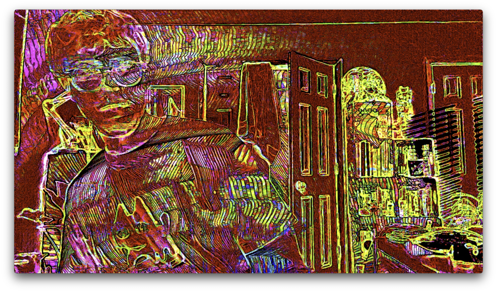
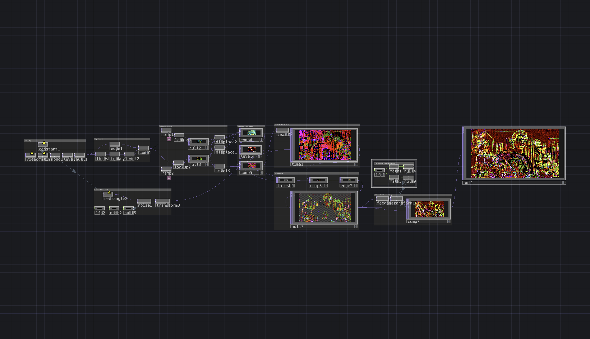

Overview
Gobstopper is a live camera effect which captures past moments and layers them as vibrant color on high-contrast areas. The resulting effect is an infinite layering of shapes and colors that evolves over time.


Click image to view gallery
Methods
This TouchDesigner project achieves its unique effect by layering many distinct outputs with the Comp TOP. A mix of RGBKey, Edge, Displace, and Ramp TOPs build several unique camera effects, one of which acting as only an outline of the camera image. The other effects are put through a time machine, enabling the layering effect to occur. The key to the infinite appearance, though, is a final feedback loop which slightly transforms and decreases the scale with each loop. Combined, we achieve the colorful layering of Gobstopper.

Click image to view gallery